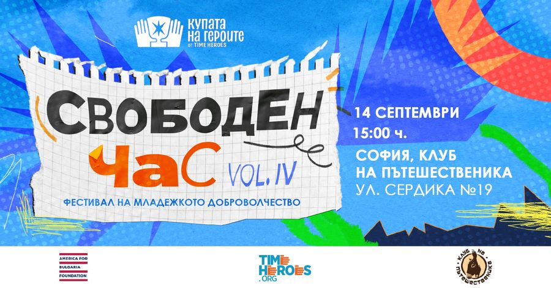

Свободен час Vol.4: Фестивал на младежкото доброволчество
7 суперски граждански организации, подкрепящи различни каузи
и TimeHeroes…
… се събираме за общо приключение при новите ни приятели от Клуб на пътешественика в София – на 14 септември от 15:00 ч.!
Ако вече си решил да отделиш неделята си за разходка из KvARTal Festival, не пропускай да се отбиеш на ул. "Сердика" №19, където те очакваме с:
15:00 - 18:00 ч. – Работилница с кауза – да украсяваме свещи с екипа на Фондация "Нашите недоносени деца"! Ще можеш да помогнеш на организацията да създаде красиви артикули, които продава на базари и в онлайн магазина си, за да подпомага дейността си в подкрепа на семействата на най-малките герои – недоносените бебета.
15:15 – 16:00 ч. – Отворена дискусия "Има ли място доброволчеството в училище и в университета?"
Важно ли е доброволчеството за учениците и студентите? Какви качества и умения развива?
Под каква форма доброволчеството и подкрепата на каузи могат да станат част от учебните планове и университетските програми?
Какви каузи вълнуват младите хора?
Как преподаватели, близки и приятели можем да подкрепяме повече младите хора в доброволчеството им?
Това са част от въпросите, с които ще обходим темата, а ти си добре дошъл да добавяш нови или да споделяш собствено мнение и опит – дискусията е отворена за участие към всеки и можеш да се запишеш за нея още сега! Така ще имаме контактите ти и ще те подсетим за събитието, когато наближи.
16:15 – 17:15 ч. – Бандитски градски дебат с Бандата на 1500-те – ако обичаш кучета, любопитен си да научиш интересни митове и факти за тях и си фен на ролевите игри, включи се в този дебат със специален формат, разработен от екипа на Бандата. Можеш да си сигурен, че ще бъде динамично и вдъхновяващо!
15:00 – 19:00 ч. Панаир с участието на организации с кауза – супер шанс да се срещнеш на живо с прекрасните личности от още шест граждански организации и да научиш как можеш да бъдеш доброволец при тях:
Фондация "Ела и Ти"
Амнести Интернешънъл България
Фондация "Програма Генерация"
Фондация "Подари време"
Фондация "Сурия"
Бандата на 1500-те
TimeHeroes също ще има щанд на НПО панаира, който с радост ще делим с приятелите ни от Университет за национално и световно стопанство (УНСС), за да ти представим общия ни международен проект, наречен
HOME, с който създадохме и развиваме доброволческа общност в УНСС.
И както традицията повелява, със "Свободен час" ще дадем официален старт на
шестия сезон на ученическото доброволческо състезание "Купата на героите"!
На място ще можеш да получиш информация за състезанието, както и инструкции за записване.
Всичко това ще бъде запечатано за бъдещите поколения доброволци от любимия ни фоторазказвач Денислав Стойчев, който и този път подкрепя с таланта си събитие на TimeHeroes.
Записвай си – 14 септември. Очакваме те от 15:00 ч. в Клуб на пътешественика (ул. "Сердика" №19).
Не забравяй да доведеш приятели!
"Купата на героите" е ученическо доброволческо състезание, което стартира отново с началото на учебната година. Пиши ни на , за да получиш стартов пакет и целогодишна подкрепа.
